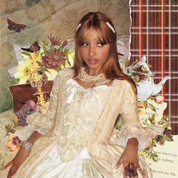
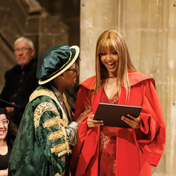

Biography

Born Victoria Beverley Walker on April 18, 2001, in Bath, Somerset, PinkPantheress is a British singer, songwriter, and producer who has redefined pop music for
the digital age. Raised in Canterbury, Kent, she began her musical journey as a teenager, fronting a rock band that covered My Chemical Romance and Paramore before
she transitioned into solo production using GarageBand in her university dorm.
Early Rise in 2021

Her rapid rise began in early 2021 when snippets of songs like "Pain" and "Break It Off" went viral, leading to her debut mixtape, To Hell with It, which earned
widespread critical acclaim. She solidified her global superstar status with the 2023 hit "Boy's a Liar Pt. 2" and her debut studio album, Heaven Knows.
Beyond her production skills, she is celebrated for her Y2K-inspired visual style, often appearing with her signature vintage handbags and
early-2000s fashion.
Accolades and Achievements

PinkPantheress has also a recieved an honorary doctorate from
England's University of Kent on July 22, 2025. She made history at the 2026 BRIT Awards. She won the British Producer of the Year award.
She was the first woman to ever win this title. She was also the youngest person to receive it.
This win broke major barriers in the music industry. It followed her 2025 mixtape, Fancy That.
This project mixed personal lyrics with fast breakbeats.